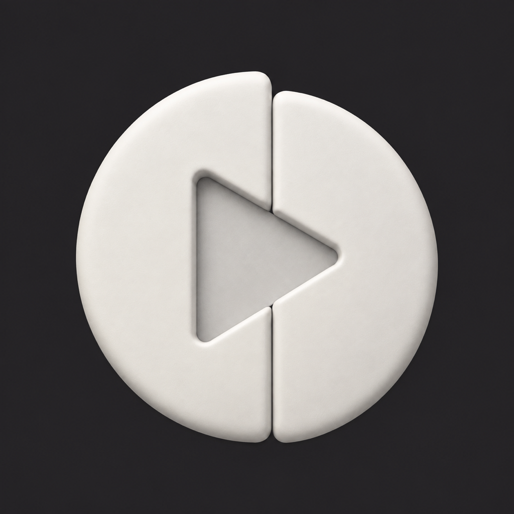
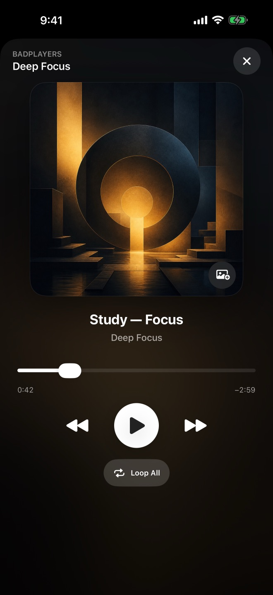
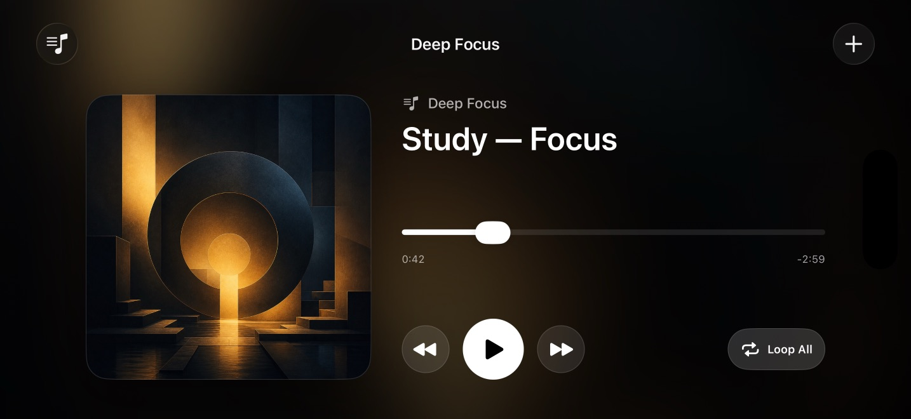
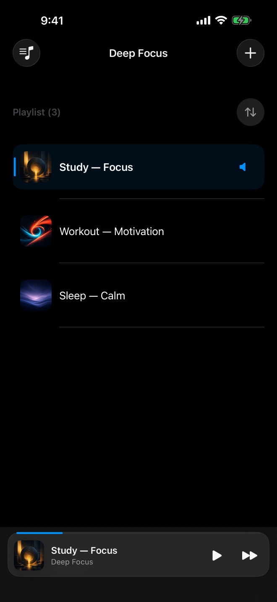
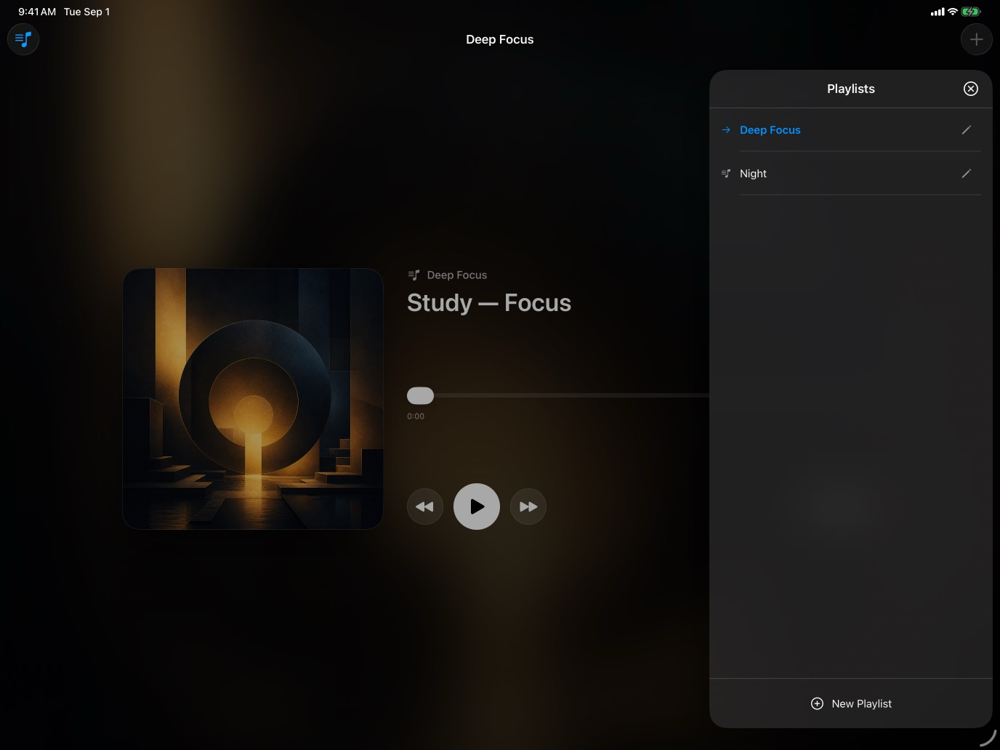
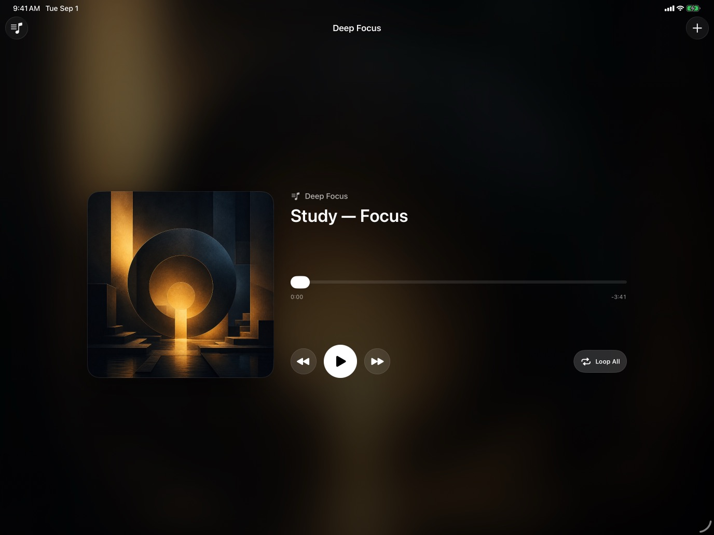
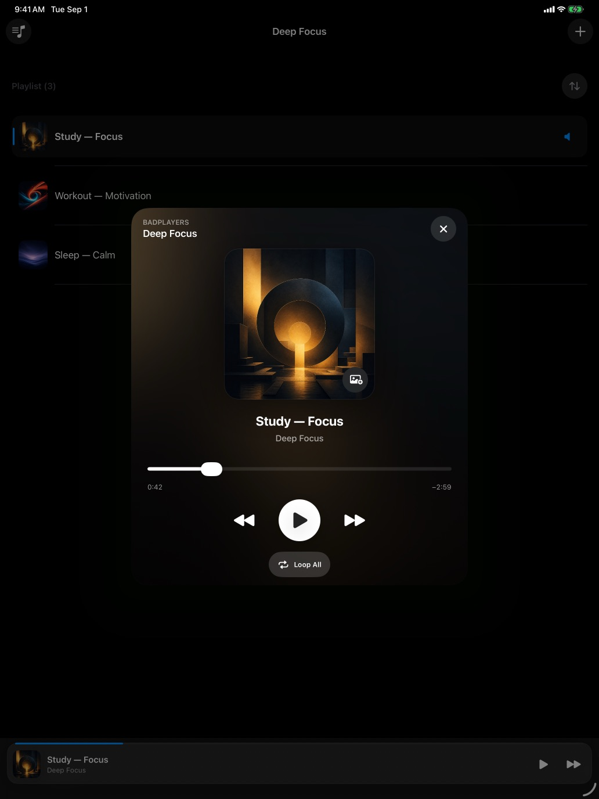

Separate playlists
Create, switch, rename, and delete playlists for the different ways you listen.
Private · Offline · Yours
Import the audio you already own, organize it into separate playlists, and keep your place—without an account, ads, or data collection.
One-time purchase · For iPhone and iPad · Requires iOS or iPadOS 17.6+


Made for every orientation
Keep the queue close in portrait, open an immersive Now Playing view, or rotate for a spacious landscape player.





Simple by design
Badplayers stays focused on reliable local playback instead of feeds, recommendations, and subscriptions.
Create, switch, rename, and delete playlists for the different ways you listen.
Each playlist remembers its current track and playback position.
Listen in the background and use playback controls from the Lock Screen.
Import audio from Files and keep a local copy available offline.
Choose custom artwork from Photos or use automatically generated covers.
Use Badplayers in English, Traditional Chinese, Japanese, or Korean.
Your listening, your rhythm
Organize long-form and repeat listening without turning it into another feed.
Keep lessons and language practice together.
Build a set that stays ready offline.
Separate calm audio from everything else.
Privacy is the default
Imported audio, artwork, playlists, and listening progress remain inside the app’s local sandbox.